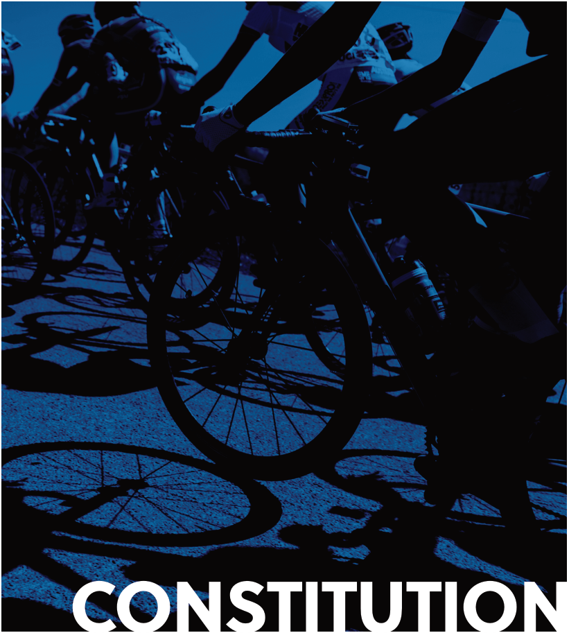
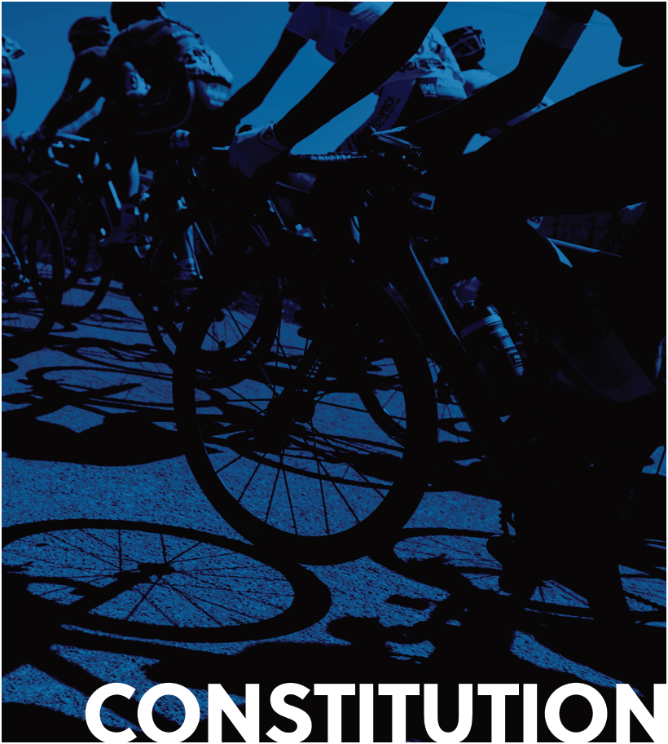
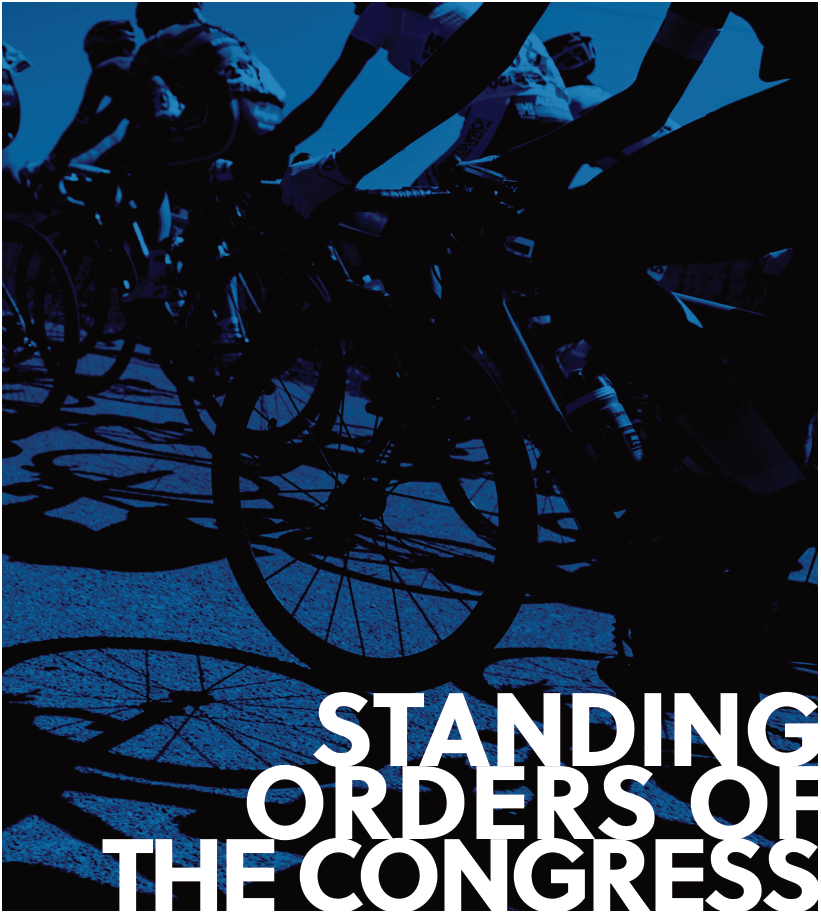
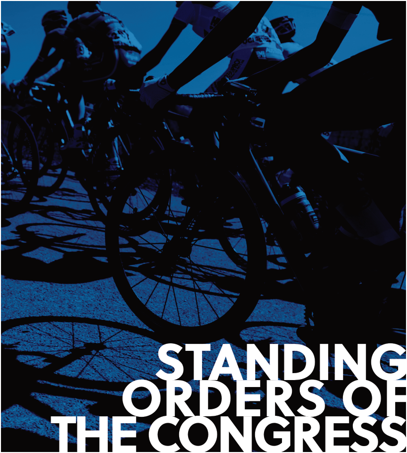

2025 UCI CONSTITUTION CONGRESS EN sept


TABLE OF CONTENT
~~CHAPTER I~~ ~~IDENTITY - PURPOSE~~ ~~3~~
~~CHAPTER II~~ ~~MEMBERS~~ ~~5~~
~~CHAPTER III~~ ~~CONTINENTAL CONFEDERATIONS~~ ~~16~~
~~CHAPTER IV~~ ~~CONGRESS~~ ~~19~~
~~CHAPTER V~~ ~~MANAGEMENT COMMITTEE~~ ~~25~~
~~CHAPTER VI~~ ~~EXECUTIVE COMMITTEE~~ ~~32~~
~~CHAPTER VII~~ ~~PRESIDENT~~ ~~33~~
~~CHAPTER VIII~~ ~~EXTERNAL REPRESENTATION~~ ~~34~~
~~CHAPTER IX~~ ~~JUDICIAL BODIES~~ ~~35~~
~~CHAPTER X~~ ~~ADMINISTRATION~~ ~~36~~
~~CHAPTER XI~~ ~~FINANCES~~ ~~37~~
~~CHAPTER XII~~ ~~FINANCIAL CONTROL AND TRANSPARENCY~~ ~~38~~
~~CHAPTER XIII~~ ~~COURT OF ARBITRATION FOR SPORT~~ ~~39~~
~~CHAPTER XIV~~ ~~OFFICIAL LANGUAGES~~ ~~40~~
~~CHAPTER XV~~ ~~S~~ ~~YMBOLS, LOGOS, DISTINCTIONS~~ ~~41~~
~~CHAPTER XVI~~ ~~FINAL PROVISIONS~~ ~~42~~
~~CHAPTER XVII~~ ~~DISSOLUTION~~ ~~42~~
~~CHAPTER XVIII~~ ~~ENFORCEMENT~~ ~~43~~
~~STANDING ORDERS OF THE CONGRESS~~ ~~44~~
2
~~CHAPTER I~~ ~~IDENTITY - PURPOSES~~
Article 1 Name and registered ofce
-
The Union Cycliste Internationale (UCI in abbreviation) is the association of national cycling federations.
-
The UCI is a non-governmental international association with a non-profit-making purpose of international interest, having legal personality pursuant to Articles 60 ff. of the Swiss Civil Code.
-
The registered office of the UCI is in Switzerland, at the place fixed by the Management Committee. Only the Congress has the right to transfer the registered office to another country.
Article 2 Objectives
The objectives of the UCI are:
a) to direct, develop, regulate, control and discipline cycling under all forms worldwide;
b) to promote cycling in all the countries of the world and at all levels;
c) to organize, for all cycling sport disciplines, world championships of which it is the sole holder and owner;
d) to draw up regulations and provisions and ensure their enforcement;
e) to encourage friendship between all members of the cycling world;
f) to promote sportsmanship, integrity, ethics and fair play with a view to preventing all methods or practices such as corruption or doping, which might jeopardize the integrity of competitions, riders, officials and members or give rise to abuse of cycling;
g) to promote gender-parity and equity in all aspects of cycling;
h) to promote Para-cycling;
i) to advocate for the safety and rights of cyclists ;
j) to represent the sport of cycling and defend its interests before the International Olympic Committee, the International Paralympic Committee and all national and international authorities;
k) to cooperate with the International Olympic Committee, the International Paralympic Committee in particular as regards the participation of cyclists in the Olympic Games;
l) to direct, develop, regulate, control and discipline any and all virtual/electronic cycling activities and competitions under all forms worldwide and to organise world championships of which it is the sole holder and owner.
m) to direct, develop, regulate, control and discipline any and all cycling activities and competitions on snow and ice under all forms worldwide and to organise world championships of which it is the sole holder and owner.
CONSTITUTION | IDENTITY - PURPOSES 3
Article 3 Principles
The UCI will carry out its activities in compliance with the principles of:
a) equality between all the members and all the athletes, licenceholders and officials, without racial, political, religious, genderrelated or other discrimination;
b) non-interference in the internal affairs of affiliated federations;
c) compliance with the Olympic Charter in everything to do with the participation of cyclists in the Olympic Games;
d) the non-profit-making purpose: the financial resources shall be used only to pursue the purposes set forth in this Constitution. UCI members have no rights thereto.
4 CONSTITUTION | IDENTITY - PURPOSES
~~CHAPTER II~~ ~~MEMBERS~~
Article 4 Members
The members of the UCI shall be the national federations accepted by the Congress as being the representative organization for the sport of cycling in general in the country of that national federation.
Article 5 National Federations
-
Every member of the UCI shall hereinafter be referred to as a “national federation”.
-
Only one national federation shall be admitted to membership for any country.
-
Membership may be granted to a national federation which is responsible for the organisation and implementation of cyclingrelated matters in the territory of a country, which:
a) is recognised as an independent state; or
b) has a National Olympic Committee.
This provision shall not affect the status of existing national federations.
- On a motion of the Management Committee and in accordance with such procedures as the Congress shall determine, the Congress may exceptionally grant provisional exemptions for federations of territories which do not fulfil the requirements under Article 5.3 for a period not exceeding two years.
Article 6 Associate members
-
The federation of a territory which does not fulfil the requirements of Article 5.3 and which belongs to a country with a national federation may be granted associate membership, subject to the agreement of such national federation.
-
The rights and obligations of associate members shall be exclusively set out in a joint agreement between the associate member, the national federation concerned, the continental confederation(s) concerned and the UCI. In any case, the associate member shall have the right to:
a) attend the UCI’s Congress;
b) take part in competitions organised by the continental confederation where its capital lies;
c) take part in UCI’s assistance, development and solidarity programmes.
CONSTITUTION | MEMBERS 5
Article 7 National Federation’s rights and obligations
Rights
- The national federations have the following rights :
a) to take part in the Congress;
b) to draw up proposals for inclusion in the agenda of the Congress;
c) to exercise their voting rights through the agency of voting delegates elected among each continental confederation;
d) to nominate candidates for elections at the UCI and continental confederations;
e) to take part in competitions organized by the UCI;
f) to take part in UCI’s assistance, development and solidarity programmes;
g) to exercise all other rights arising from this Constitution and other regulations;
h) to receive several benefits from the UCI and/or the continental confederations.
- The exercise of these rights is subject to other provisions in this Constitution and the applicable regulations.
Obligations
-
As members, the national federations shall comply with the Constitution and Regulations of the UCI, as well as with all decisions taken in accordance therewith. Likewise, they shall have the Constitution, Regulations and decisions of the UCI complied with by all persons concerned.
-
The Regulations of the UCI shall be incorporated in the corresponding regulations of the national federations.
-
The constitution and regulations of the national federations shall not run counter to the Constitution and Regulations of the UCI. In case of divergence, only the Constitution and Regulations of the UCI shall apply. The constitution and the regulations of the national federations must contain an express clause that in case of divergence with the Constitution and Regulations of the UCI, only the latter shall apply.
-
The national federations must manage their internal affairs with total independence and ensure that no third party interferes in their operations. They must remain autonomous and resist all political, religious and financial pressure which may infringe their commitment to abide by the Constitution of the UCI. Any external form of interference or attempt to interfere must be reported to the UCI.
[Comment: This provision does not prevent, for instance, the government from controlling the appropriate use of allowances granted to a national federation but under no circumstances should the government interfere with the strategy of the national federation, such as the allocation of funds for dedicated disciplines or competitions, or with the operations of the national federation, including but not limited to aspects such as national team selections or the organisation of cycling competitions or designation of staff.]
6 CONSTITUTION | MEMBERS
- The constitution and regulations of the national federations must make provision for elections that ensure complete independence of the national federation vis-à-vis third parties, that elections are held at least every four years and requiring all candidates to be licence-holders of the same national federation since at least one year prior to such election.
In particular, national federations shall not allow governments and other public authorities to appoint members of the governing bodies of a national federation.
In addition, national federations shall ensure that all rules applicable to their electoral proceedings are included in their own constitution and regulations.
[Comment: This provision does not prevent a national federation from deciding, for instance, that within its Management Committee a limited number of positions may be taken by government representatives without voting rights, while the members with voting rights must be appointed exclusively by the general assembly amongst candidates that are nominated exclusively by the members of the national federation and according to the national federation’s own constitution and regulations. Nor does it prevent an electoral system whereby the members of the national federation elect the members of the executive committee who then, amongst themselves, designate the President or other specific roles.]
-
The national federations are obliged to include the provisions contained in paragraphs 6 and 7 in their constitution.
-
Any national federation’s decisions, elections and bodies that are not in compliance with paragraphs 6 and 7 shall not be recognized by the UCI. If the situation is not regularized within the time limit granted by the UCI and in a manner that is compliant with the aforementioned provisions, the national federation may be suspended.
-
The national federations shall pay their annual membership contribution and fulfil all other financial obligations towards the UCI as further provided in Article 8.
-
The national federations shall ensure appropriate representation of each gender on their executive committee.
-
The national federations shall ensure that all required persons, including all persons in an elected role or candidates for an election, are bound by the UCI Regulations by holding a licence issued in accordance with the procedures laid down in the UCI Regulations.
-
The national federations shall make sure the structure of their general assembly allows adequate representation of all stakeholders of cycling within their country.
[Comment: this provision does not restrict the different forms of representation within the general assembly of a national federation which may include individual members, clubs or regional associations. However, the representation within the general assembly shall ensure that it is adapted to the specificities of the national federation such as the number of licence-holders, clubs and regional associations. In particular, the structure of the general assembly shall not indirectly or de facto exclude stakeholders without reason.]
CONSTITUTION | MEMBERS 7
Article 8 Financial obligations
-
National federations shall pay their annual membership contribution as well as all other financial obligations to the UCI as determined by the UCI Congress or by the UCI Management Committee and stipulated in the UCI Regulations or in the “UCI Financial Obligations”, or on the basis of a contractual agreement with the UCI or the UCI World Cycling Centre, within the applicable time limit. Financial obligations within the meaning of the present article include amounts owed to the UCI, the UCI World Cycling Centre or to a third party to which a regulatory task of the UCI has been delegated.
-
In case of default for payment of any financial obligation according to paragraph 1 of the present article and the terms hereafter, the following consequences shall apply automatically against the national federation concerned:
a) Inadmissibility of any nomination of candidates for election with the UCI or a continental confederation where nomination by one or several national federations is a requirement for the eligibility of the candidate in question. This consequence is assessed on the closing date for the submission of candidatures, i.e. to the continental confederation for candidates for the presidency and/or the executive committee of the continental confederation as well as for the roles of voting delegate at the UCI Congress (including substitutes) and/or member of the UCI Management Committee and to the UCI for candidates for the role of UCI President;
b) Inadmissibility of any bid for the organisation of UCI World Championships from the country of the national federation. This consequence is assessed at the time of the UCI Management Committee meeting at which the UCI World Championships in question are awarded;
c) Inadmissibility of any application for funding or other contributions through the UCI Solidarity program. This consequence is assessed at the time of the UCI Management Committee meeting at which the UCI Solidarity contributions are granted.
With regard to point a. above, only the amounts due (as per the invoice due date) on or before 1 November of the year preceding the elections for the UCI President and UCI Management Committee are taken into account. With regard to points b. and c. above, only the amounts due (as per the invoice due date) on the closing date for the submission candidatures (point b.) and applications for contributions (point c.) are taken into account.
Only amounts that have been duly invoiced by the UCI, the UCI World Cycling Centre or the third party to which a regulatory task of the UCI has been delegated are taken into account for the application of the present article. Furthermore, in the event of the signature of a payment plan for the settlement of unpaid financial obligations, any breach of the said agreement at the time of assessment of the consequences under points a., b. or c. above shall be considered as a default in the payment of financial obligations and taken into account for the application of the aforementioned consequences.
8 CONSTITUTION | MEMBERS
-
The assessment of whether the nominations for candidates for elections are admissible (par. 2.a.) shall be carried by the competent bodies according to the relevant provisions of the UCI Constitution and, if applicable, the Continental Confederations’ Constitutions. As regards the admissibility of bids for the UCI World Championships (par. 2.b.) and applications for contributions from the UCI Solidarity Program (par. 2.c.), assessment is made by the UCI.
-
In addition to the consequences set out in paragraph 2 of the present article, the UCI Management Committee may add a proposal to suspend the national federation on the agenda for the next UCI Congress or provisionally suspend the national federation according to Article 20.1 for any failure to meet the financial obligations set out in paragraph 1 of the present article. The UCI may agree on a payment plan with a national federation which fails to fulfil its financial obligations. In case of failure to comply with an agreed payment plan, the national federation may be suspended.
Article 9 Application for membership
-
The application for membership shall be signed by the statutory representatives of the applicant national federation and sent to the registered office of the UCI.
-
The application must be accompanied by a file containing the following elements:
a) a formal statement that the applicant national federation, on the condition of its admission, shall accept, apply and comply with UCI’s Constitution and Regulations, and adapt its own constitution and regulations accordingly;
b) the text of the constitution and all regulations of the applicant national federation;
c) a detailed report on the structures and activities in the cycling sport of the country concerned;
d) a list of unions or associations to which the applicant national federation is already affiliated;
e) a description of the members of the Management Committee or equivalent body;
f) the official address for correspondence;
g) the identity of persons empowered to sign correspondence.
-
Under penalty of non-admissibility, the application for membership and its annexes shall be drawn up in English or in French.
-
The national federations shall inform the UCI about every amendment in the data referred to in points b, d, e, f, and g of paragraph 2 above as soon as possible.
CONSTITUTION | MEMBERS 9
Article 10 Application’s review
Applications for membership shall be reviewed by the Management Committee. Before submitting them to the Congress, the Management Committee may request additional information and ask the applicant national federation to alter its structures or regulations to bring them in line with the principles and Regulations of the UCI.
Article 11 Procedure for admission
-
If the application for membership is judged complete and in conformity with the requirements, the Management Committee shall inform the national federations and place the voting on admission in the agenda of the next Congress, or the Congress after that if the first Congress takes place less than two months after the national federations were duly notified of the candidacy.
-
In the latter case, the Management Committee may grant provisional membership in anticipation of the voting at the Congress. Provisional membership does not entitle the applicant national federation to take part in the corporate functions of the UCI, but only in sport activities, provided the other conditions are met.
Article 12 Admission by the Congress
-
The Congress shall decide in its sole discretion on the admission before voting on any other item of the agenda, with the exception of a vote on the expulsion of a national federation.
-
An applicant national federation may make a presentation before the Congress. Its delegates must leave the room when the application is being reviewed and the vote taken.
-
If the application is accepted, the delegates of the new member shall be authorized to take part in the deliberations of the Congress immediately.
Article 13 Recognition and contacts
-
The members of the UCI shall extend reciprocal recognition as federations regulating cycling in their respective countries to the exclusion of all others.
-
Each national federation shall recognize and execute the decisions taken by another national federation.
Except for other remedies, the Management Committee may decide upon request of any interested person, that a decision taken in application of a national rule shall have effect in the country of the national federation concerned only.
- Each national federation shall spare no effort to enable the members of other national federations to take part in international cycling activities organized on its territory.
10 CONSTITUTION | MEMBERS
- Except in the case of prior consent of the Management Committee, national federations and their members shall take part only in cycling activities organized by one of them or by the UCI or a continental confederation. Moreover, they shall not take part in activities organized by a suspended national federation, except as provided in Article 20.4, in fine.
Article 14 Prohibition to join competing association
A national federation which joins a competing union or association, or a body declared as such by the Management Committee or the Congress, shall be automatically suspended if it refuses to relinquish this other membership within the month of the notice to that effect being served by the Management Committee.
Article 15 Failure to fulfl obligations
-
Failure of a national federation to fulfil any of its obligations pursuant to the Constitution and Regulations of the UCI or towards the World Cycling Centre shall render said national federation liable to a fine of CHF 300.00 to 10,000.00 to be decided by the Management Committee. The Management Committee may also delegate this power.
-
In the event of serious or persistent breach, the national federation concerned may moreover be suspended.
Article 16 Membership contribution
Each national federation shall pay an annual membership contribution, the amount of which shall be fixed by the Congress on a proposal of the Management Committee.
Article 17 Payment of frst contribution
The first contribution is due for the calendar year during which the national federation is admitted by the Congress.
Nevertheless, an applicant national federation may request that its membership takes effect on 1 January after admission by the Congress. In such a case, Article 12.3 shall not apply.
Article 18 Deadline for payment
The contributions shall be paid to the UCI on or before the 31st of March of the year for which it is due.
Article 19 Suspension in case of failure to pay
The Management Committee shall place on the agenda of the next Congress the suspension of a member which has failed to pay its contribution or any other financial obligation set out in Article 8 paragraph 1.
CONSTITUTION | MEMBERS
11
12
Article 20 Suspension and other measures
-
The Congress is competent for suspending a national federation. The Management Committee may, however, suspend a national federation that seriously violates its obligations as member with immediate effect. The suspension shall last until the next Congress, unless the Management Committee has lifted it in the meantime.
-
A suspension shall be confirmed at the next Congress by a two-third majority of the voting delegates present. If it is not confirmed, the suspension is automatically lifted.
-
A national federation may be suspended in the following circumstances:
a) when the national federation ceases to assume the real character of a national cycling federation in its country;
b) when the national federation discredits the international reputation of cycling sports;
c) when the national federation repeatedly fails to fulfil its financial obligations towards the UCI;
d) when the national federation fails to comply with its obligations under Article 7;
e) when the national federation seriously violates the Constitution, regulations or decisions of the UCI;
f) when the national federation fails to comply with its obligations under the World Anti-doping Agency (WADA) Code;
g) when the national federation makes a decision, issues a policy or acts in a manner that is discriminatory against a country, a private person or group of people on account of race, skin colour, ethnic, national or social origin, gender disability, language, religion, political opinion or any other opinion, wealth, birth or any other status, sexual orientation or any other reason.
- The suspension of a national federation entails the following measures in particular:
a) non-participation in the Congress of the UCI;
b) inadmissibility of the nominations of candidates for elections;
c) suspension of the members of the national federation in committees and commissions of the UCI;
d) deletion or non-registration of its races on the UCI International Calendar;
e) exclusion of its cyclists from events of the UCI International Calendar;
f) refusal or withdrawal of the organization of UCI World Championships and/or UCI World Cup events;
g) prohibition for other national federations to entertain sporting contact with the suspended national federation.
In its discretion and taking into account all the circumstances of the case, in particular the legitimate interests of the riders and of third parties, the Management Committee may nonetheless decide that certain measures will not be applied, will apply to certain events only, or for a defined period.
CONSTITUTION | MEMBERS
-
A decision of suspension can be imposed for an indefinite period of time and the lifting of the suspension may be made subject to the fulfilment of certain requirements to be proposed by the Management Committee and approved by the Congress. The Management Committee is competent to determine that the conditions for lifting the suspension have been met and confirm the reinstatement of the national federation’s rights. A suspension may also be imposed for a fixed period of time in consideration of the circumstances of the case.
-
As part of a decision of suspension, the Congress, upon proposal by the Management Committee, may appoint a normalisation committee to act in replacement of members of the national federation’s executive committee in situations where the executive body fails to adhere to practices of good governance, transparency, financial accountability and stability, or puts at risk or in disrepute the organisation and development of cycling in its country or in cases where decisions of the Management Committee or Congress aimed at addressing the situation with the national federation are not complied with. The mandate of a normalisation committee may include the following:
a) management of daily affairs of the national federation;
b) establishment of a budget and appropriate financial measures;
c) review and amendment of the constitution and the rules of the national federation to ensure compliance with the UCI Constitution and UCI Regulations before duly submitting them for approval to the national federation’s general assembly;
d) dealing with the registration of riders for participation in UCI World Championships and UCI World Cup events if authorised by the Management Committee under Article 20.4 above;
e) organisation, monitoring and/or conduct of congresses and elections; and
f) any other action necessary to ensure compliance with the UCI Constitution and UCI Regulations and carrying out the UCI’s requirements for lifting the suspension on the national federation.
The above tasks may also be assigned directly to a national body such as the National Olympic Committee, which shall act in accordance with paragraphs 6 to 8 of the present article.
-
A normalisation committee may be appointed as an independent measure instead of the suspension by the Management Committee. The decision of the Management Committee shall be subject to confirmation by the Congress.
-
A normalisation committee shall be composed of an adequate number of individuals to be identified and appointed by the Management Committee upon consultation, if appropriate, with the National Olympic Committee and/or continental confederation of the national federation concerned. The normalisation committee will act as a reform committee and may appoint a separate electoral committee for any elections that need to be carried out. The term of appointment for the normalisation committee will expire no later than 6 months after appointment by the Management Committee but may be extended if the normalisation committee has not been able to carry out its tasks for reasons not within its control.
CONSTITUTION | MEMBERS
13
14
- In place of or in addition to any suspension of a national federation or the appointment of a normalisation committee, the Congress – and the Management Committee in urgent cases – has the right to impose any of the following sanctions:
a) refer the national federation to the UCI Ethics Commission;
b) set specific measures, terms or conditions to be met or steps to be undertaken to avoid a suspension;
c) issue a caution or a warning;
d) impose a fine;
e) withhold contributions of any kind;
f) withdraw or declare inadmissible any application for support through the UCI Solidarity program;
g) withdraw or declare inadmissible any bid for UCI events or activities to be held in the country of the national federation;
h) exclude riders, staff members and/or officials from any UCI events or activities;
i) suspend any members of the national federation from sitting on a UCI commission or the Management Committee;
j) impose any other sanctions considered appropriate.
- In cases of act of terrorism, riots, civil unrest, strike, nuclear or chemical contamination, epidemic and other similar circumstance as well as in the event of involvement of a national federation’s government in a war or other similar situations, the Congress – and the Management Committee in urgent cases – shall have the power to take appropriate measures aiming at preserving the safe, peaceful and regular conduct of cycling events. The measures may include the suspension or exclusion of a national federation, other sanctions or other appropriate protective measures.
Article 21 Exclusion
-
A national federation may be excluded by the Congress for the same causes as for suspensions according to Article 20.3 above.
-
The decision to exclude a national federation requires a majority of two thirds of the votes cast.
-
The Congress shall decide on the exclusion before voting on any other point on the agenda.
Article 22 Right to be heard
The national federation shall be given the opportunity to be heard, orally or in writing, before a sanction is imposed on it.
CONSTITUTION | MEMBERS
Article 23 Resignation
A national federation wishing to leave the UCI shall send a letter of resignation by registered post with acknowledgement of receipt to the registered office of the UCI. Notice of resignation must reach the administration of the UCI no later than six months before the end of the calendar year.
Article 24 No claim for reimbursement or damages
-
Under no circumstance will a national federation be entitled to reimbursement of its membership contributions.
-
The national federations shall claim no damages for decisions taken by the authorities of the UCI concerning them, except in case of abuse of law or serious offence.
CONSTITUTION | MEMBERS
15
~~CHAPTER III~~ ~~CONTINENTAL CONFEDERATIONS~~
Article 25 Defnition
-
National federations from the same continent shall be grouped together in a continental confederation, an administrative unit and integral part of the UCI.
-
There shall be 5 continental confederations:
- Africa - America - Asia - Europe - Oceania. -
Each national federation shall be a member of the confederation of the continent in which its national capital lies. Exceptions may be decided by the Congress with the majority of the votes cast upon a request made to the Management Committee by the national federation and both continental confederations concerned.
-
Each UCI associate member shall be registered as such with the continental confederation of the continent in which its capital lies. The respective rights and obligations of the associate member and the continental confederation shall be as set out in the joint agreement contemplated in Article 6.2.
Article 26 Role, rights and obligations
-
All continental confederations shall promote the development of cycling in their respective continents and shall inform the UCI of problems concerning cycling specific to their continent. They shall act as relays for the UCI and facilitate the resolution of issues arising within or amongst the national federations in their respective continents.
-
They shall submit to the Management Committee of the UCI proposals for activities at the continental level, and in particular as regards:
a) drawing up the continental calendar of cycling events;
b) organizing and planning the training courses for commissaires and technicians;
c) organizing continental championships or regional games.
-
Continental confederations shall draw up the regulations concerning the organization of continental cycling activities.
-
Under the supervision of the Management Committee and subject to such terms and conditions as the Management Committee may lay down each continental confederation may set up forms of cooperation with and between countries in its continent where there is no national federation or associate member of the UCI.
16 CONSTITUTION | CONTINENTAL CONFEDERATIONS
Article 27 Organisation and elections
-
Each continental confederation shall be organized administratively in such a way as to ensure the proper execution of its tasks as well as the participation of the national federations in the operation of the UCI. It shall furthermore possess its own legal personality in the country where its headquarters are located, in a legally recognised form, in accordance with the applicable local laws.
-
For that purpose, the continental confederations shall establish a continental secretariat and adopt a Constitution and rules of procedure in strict conformity with the Constitution and Regulations of the UCI.
The Constitution and/or the rules of procedure shall provide for, in particular:
a) at least one general meeting of the continental confederation every two years;
b) an executive committee and a president elected democratically every four years by the general meeting;
c) rules of eligibility for all elected positions (president, executive committee, UCI Management Committee candidates, voting delegates) which include at least the eligibility requirements laid down in the UCI Constitution, including the obligation to hold a licence and being nominated by the national federation of their nationality, or of their residence, or of a certain number of other national federations. Continental confederations may nonetheless determine that a nomination from a national federation is not a requirement for the admissibility of the incumbent president’s candidature. In accordance with Article 8, any nomination from a national federation which has failed to meet its financial obligation shall be deemed inadmissible;
d) a representation of 25% of each gender within the executive committee, rounded up or down to the closest absolute number;
e) the method of designation of voting delegates to the UCI Congress in accordance with Article 39;
f) an electoral process handled by a dedicated body, composed of three members appointed by the UCI Ethics Commission. The members shall be independent from the continental confederation and at least two out of the three members shall be from the relevant continent. This body is responsible for conducting the electoral process, receiving and processing candidacies (including verifying the eligibility of the candidates), the regularity of the elections and serves as a first instance decision-making body in case of a complaint related thereto; any decision rendered by the said body may ultimately be appealed before the Court of Arbitration for Sport in Lausanne, Switzerland;
g) a limitation on the number of terms that the president may serve. This number may not exceed four (4) terms of four (4) years each;
h) a limitation setting the maximum age of the president at 74 years at the time of election.
CONSTITUTION | CONTINENTAL CONFEDERATIONS 17
i) The election of the president and the executive committee shall take place within a seven-month period preceding 1 April of the year in which the UCI Management Committee is elected. The confederations will inform the UCI of the identity of the president and of the executive committee in the week of their election.
-
The Management Committee of the UCI can establish standard rules of procedure for the continental confederations.
-
The UCI grants an annual contribution to the operating costs of the continental confederations.
-
The continental confederations shall annually provide the UCI with governance and financial information, including the financial accounts certified by an independent body, in one of the UCI official languages. The Management Committee of the UCI can establish internal guidelines detailing the level of information to be provided. Failure to respect this obligation or to comply with the relevant guidelines may result in the suspension of all or part of the project funding and other contributions to the continental confederation.
Article 28 Non-conformity with UCI Constitution and Regulations
-
The constitution and regulations of the continental confederations shall not run counter to the Constitution and Regulations of the UCI. In case of divergence, only the Constitution and Regulations of the UCI shall apply. The constitution and the regulations of the continental confederations must contain an express clause that in case of divergence with the Constitution and Regulations of the UCI, only the latter shall apply.
-
Regulations and decisions of the continental confederations may be cancelled by the Management Committee of the UCI, either ex officio or at the request of a national federation, in case of non-conformity with the Constitution and Regulations of the UCI.
18 CONSTITUTION | CONTINENTAL CONFEDERATIONS
~~CHAPTER IV~~ ~~CONGRESS~~
Article 29 Defnition of the Congress
The Congress is the general meeting of members and the supreme body of the UCI.
Article 30 Statutory or Extraordinary Congress
-
The statutory Congress shall be held annually.
-
The Management Committee may convene extraordinary Congresses at any time. The Management Committee must convene an extraordinary Congress within two months of a request submitted to the Management Committee in writing by one fifth of the national federations, stating the reasons and specifying the items for the agenda.
-
The date and venue of each Congress shall be specified by the Management Committee at least thirty days before the date of the Congress.
Article 31 Powers and duties of the Congress
- The Congress shall have the following exclusive powers and duties:
a) Amendments to the Constitution and dissolution of the association;
b) To transfer the registered office of the UCI to another country;
c) Admission, expulsion and suspension of national federations, without prejudice to Article 48.1 (d);
d) Setting the annual amount of contributions on a proposal from the Management Committee;
e) Election of the President of the UCI and of 11 other members of the Management Committee;
f) Dismissal of the President and of the members of the Management Committee of the UCI;
g) Appointment of the public auditor, on a proposal from the Management Committee and their dismissal;
h) Appointment and dismissal of the members of the Ethics Commission, on a proposal from the Management Committee.
- In addition, the Congress shall each year decide on:
a) the management report of the Management Committee;
b) the auditor’s report on the accounts;
c) the annual accounts of the previous year;
d) the budget for the following year.
CONSTITUTION | CONGRESS
19
Article 32 Convening of the Congress
-
Notices convening the Congress shall be sent to the national federations at least thirty days before the date of the Congress. The continental confederations will be sent a copy. The notices shall indicate the date, the time, and the place of the Congress as well as the agenda. Should the case arise, they will be accompanied by the full text of any proposals to amend the Constitution and the list of the candidates for the presidency and the Management Committee.
-
Notices convening the statutory Congress shall moreover be accompanied by:
a) the report of the Management Committee;
b) the accounts and the budget;
c) the auditor’s report.
Article 33 Agenda of the Congress
-
The agenda of the Congress shall be drawn up by the Management Committee.
-
A national federation wishing to include one or more items in the agenda of the Congress, or to put a question to the Management Committee, shall submit its draft proposals stating the reasons on which they are based or the text of its question, in English or in French, to the registered office of the UCI at least sixty days before the date of the Congress.
-
With the exception of amendments to the Constitution, any question not on the agenda of the Congress can be added to be discussed and voted on by the Congress at the request of fifteen national federations.
-
Except in cases where the preceding point applies, no vote shall be taken on any question which is not on the agenda.
Article 34 Delegates to the Congress
-
Each member of the UCI and the applicant national federations whose membership is on the agenda may be represented at the Congress by a delegation of not more than three persons.
-
Delegates must be at least 18 years old, a member of their national federation, and duly appointed by the appropriate body of said national federation.
-
Members of the UCI’s staff may not be appointed as delegates to the Congress.
-
At least 15 days before the Congress, the applicant national federations shall submit to the registered office of the UCI, the exact composition of their delegation, identifying the head of the delegation and any alternates.
20 CONSTITUTION | CONGRESS
- The identity of the members of each delegation shall be registered at the opening of the Congress by the director-general or their assistant. Once admitted by this procedure, members of delegations may not be replaced during the Congress.
Article 35 Opening to the public
Unless otherwise decided by the Congress, the Congresses of the UCI shall be public.
Article 36 Chair and quorum of the Congress
-
The President of the UCI shall open and chair the Congress. He shall read the agenda and conduct the discussions and voting operations.
-
He may request the assistance of the members of the Management Committee and the director-general.
-
The Congress may be held only if the majority (more than 50%) of the voting delegates are present.
-
If a quorum is not achieved, a second Congress shall take place 24 hours after the first, with the same agenda. A quorum is not required for the second Congress unless any item on the agenda proposes the amendment of the Constitution, the election or the dismissal of the President or the members of the Management Committee or the dissolution of the UCI.
Article 37 Discussions on agenda items
-
Before proceeding to vote on the items of the agenda, the members of each delegation may address the Congress and speak freely on the item put to vote.
-
For the proper conduct of the Congress, the President may limit the speaking time of each delegate and the number of speakers to one per delegation.
-
The President shall close the discussions unless the Congress decides otherwise.
CONSTITUTION | CONGRESS
21
22
Article 38 Voting delegates
-
Members shall exercise their voting rights through the agency of voting delegates democratically elected among each continental confederation. The admissibility of a candidate for election as a voting delegate, or substitute voting delegate, shall be subject to being a member of a national federation of the continental confederation concerned and being nominated as a candidate by the relevant national federation or national federations, as determined by the constitution of the continental confederation. In accordance with Article 8, any nomination from a national federation which has failed to meet its financial obligations shall be deemed inadmissible. The verification of conditions for eligibility shall be carried out by the continental confederation’s electoral monitoring committee prior to the continental confederation’s congress and by the UCI Ethics Commission prior to the UCI Congress.
-
The total number of voting delegates shall be 45 distributed among continental confederations as follows:
Africa: 9 delegates
America: 9 delegates
Asia: 9 delegates
Europe: 15 delegates
Oceania: 3 delegates
Each delegation of voting delegates per continental confederation shall include at least 25% of members of each gender, with this percentage rounded up to the nearest whole number.
-
Each voting delegate shall have one vote.
-
In addition to their respective voting delegates, each continental confederation shall democratically elect a number of substitute voting delegates as follows:
Africa: 5 substitute delegates
America: 5 substitute delegates
Asia: 5 substitute delegates
Europe: 8 substitute delegates
Oceania: 2 substitute delegates
Each delegation of substitute voting delegates per continental confederation shall include at least 25% of members of each gender, with this percentage rounded up to the nearest whole number.
- Substitute voting delegates may only vote at the Congress in the event that the corresponding number of voting delegates of a continental confederation are absent at the Congress. The order of substitution by substitute voting delegates shall, firstly, guarantee the 25% representation of each gender and, secondly, follow the order of their election. In case of absence of more than the allocated number of substitute voting delegates for a continental confederation, the position may not be replaced.
CONSTITUTION | CONGRESS
Article 39 Identity of voting delegates
-
The identity of the voting delegates and substitute voting delegates as well as the order of election of substitute voting delegates must be communicated by the continental confederations to the registered office of the UCI at least three months prior to the date of the Congress. Delegates whose identity has not been communicated in time would not be entitled to vote at the Congress.
-
A voting delegate may not vote as a proxy for another voting delegate.
-
Voting delegates shall not be appointed from among the members of the Management Committee, the staff of the UCI or a continental confederation.
Article 40 Requisite majority for decisions
-
Unless otherwise stipulated in the Constitution, a majority (more than 50%) of the votes cast is necessary for decisions to be valid.
-
If the voting pertains to more than two possibilities, none of which obtained a majority (more than 50%) of the votes cast, a second round of voting shall be organized on the two possibilities with the best score in the first round.
-
A majority of two thirds of the votes cast shall be required in the following cases:
a) any sanctions under Articles 19, 20 and 21, including suspension or exclusion of a member;
b) dissolution of the UCI;
c) amendment of the Constitution ;
d) dismissal of the President.
Nevertheless, the provisions of Articles 25, 38, 40, 49, and 50.1 of the present Constitution cannot be amended except by a majority of three quarters of the votes cast.
- Abstentions and null and void votes do not count.
Article 41 Requisite majority for elections
-
In the case of elections, each voter may vote for as many candidates as there are vacancies. The candidates who obtain the most number of votes shall be elected. In case of an equality of votes for the last position(s) available, a runoff election of the tied candidates will be conducted.
-
If the election is for only one vacancy, the candidate who receives a majority (more than 50%) of the votes cast shall be elected. If necessary, a second ballot shall be organized between the two candidates who received the highest number of votes in the first round. In the event of a persistent tie between the two remaining candidates after two successive ballots, the decision will be made by toss of a coin.
-
If there is only one candidate for a position or if there are as many candidates as there are positions, the election is conducted without voting.
CONSTITUTION | CONGRESS
23
24
Article 42 System for voting
-
Voting is by a show of hands, or if requested by a voting delegate, by roll call.
-
Nevertheless, voting by secret ballot shall be used:
a) for the admission, suspension and exclusion of members of the UCI;
b) for the election and dismissal of the President and the members of the Management Committee;
c) at the request of seven voting delegates.
Article 43 Amendments to the agenda
-
All amendments of the items on the agenda must be made in writing, at the registered office of the UCI, at least fifteen days before the date of the Congress. The text of the amendments shall be distributed at the beginning of the Congress at the latest.
-
The voting shall pertain first to the amendments, beginning by the last one, then on any amended proposal.
Article 44 Delegation to a commission
The Congress may decide that a proposal is to be submitted to a commission appointed by the Management Committee, which shall draw up a relevant report.
This proposal shall be included in the agenda of the next statutory Congress.
Article 45 Minutes
-
Minutes shall be taken of every Congress of the UCI.
-
The minutes shall be drawn up during the session by the directorgeneral or by the person appointed by the President of the UCI for that purpose.
-
The minutes shall be drawn up in English or in French, at the author’s discretion.
-
The minutes shall be translated into French or into English, as the case may be, and sent to the national federations and continental confederations.
Article 46 Efective dates of decisions
Unless otherwise decided by the Congress, the decisions of the Congress shall be effective immediately.
CONSTITUTION | CONGRESS
~~CHAPTER V~~ ~~MANAGEMENT COMMITTEE~~
Article 47 Role
-
The UCI shall be managed by its Management Committee under the authority of the Congress.
-
The Management Committee shall be vested with the most extensive powers as regards the management of the UCI and the regulation of cycling sports. It shall decide all matters not otherwise reserved to another policy body by this Constitution.
Article 48 Powers
- Without prejudice to Article 47, the Management Committee shall, in particular:
a) fix the date and venue of the Congresses;
b) convene and be responsible for organizing Congresses;
c) execute the decisions of Congress;
d) declare the suspension of members of the UCI, to be approved at the next Congress, in serious and urgent cases;
e) determine the rights and obligations of associate members;
f) propose the nomination of the auditor to the Congress;
g) propose the amount of annual contribution to the Congress;
h) make up the budgets and the annual accounts to be submitted to the Congress;
i) appoint the director-general on a proposal from the President;
j) decide on contracts to be signed with third parties in accordance with the financial regulations;
k) adopt and amend the UCI regulations;
l) determine the financial obligations for the various stakeholders of cycling;
m) set up and appoint the members of the commissions necessary to the proper functioning of the UCI;
n) set up and appoint the members of the judicial bodies with the exception of those of the Ethics Commission, who are elected by the Congress;
o) set the venue for the world championships and award their organisation;
p) ensure that the Constitution is applied and adopt the executive arrangements required for its application.
- The Management Committee shall specify the conditions of participation in cycling events. It may require the granting of licences according to the procedures which it shall draw up or the payment of contributions or fees.
CONSTITUTION | MANAGEMENT COMMITTEE 25
- Infringements to the regulations and decisions shall be sanctioned in accordance with the regulations and procedures laid down by the Management Committee.
The following sanctions may be applied:
a) warning
b) reprimand
c) fine
d) suspension
e) final exclusion
f) exclusion from one or more specific events
g) disqualification from a race
h) downgrading
i) penalties in time and/or points
j) withdrawal of prizes
k) educational measures
l) other disciplinary measures.
- The Management Committee may also delegate this power.
Article 49 Composition
- The Management Committee shall be composed of the 18 following
members:
- the President of the UCI; - 11 members elected by the Congress; - the 5 presidents of the 5 continental confederations; - the President of the Athletes’ Commission who shall be elected as
such by the members of said commission.
-
The President shall be elected by the congress in accordance with Article 53.
-
The 11 other elected members shall be elected by the Congress in compliance with the following distribution:
- 7 members, including at least 2 members of each gender, shall
come from UEC national federations;
- 1 member shall come from a CAC national federation;
- 1 member shall come from a ACC national federation;
- 1 member shall come from a COPACI national federation;
- 1 member shall come from a OCC national federation.
- The members intended in paragraph 1 above can be joined by a maximum of two co-opted members.
26 CONSTITUTION | MANAGEMENT COMMITTEE
Article 50 Elections and term
- Except in case of succession, the President and the 11 other elected members of the Management Committee are elected at the same Congress. The election of the President shall be in accordance with Article 41.2, immediately before the election of the 11 other members.
The election of these 11 other members shall be in accordance with Article 41.1 being understood that:
- the UEC shall present a list of at least 10 and no more than 13
candidates, including at least 3 candidates of each gender;
- the ACC, the CAC and the COPACI shall each present a list of at
least 2 and no more than 4 candidates, including at least one candidate of each gender;
- the OCC shall present a list of at least 2 and no more than 3
candidates, including at least one candidate of each gender.
If need be article 41.3 shall apply
-
The term of office of the Management Committee and of the President shall commence immediately upon the adjournment of the Congress that elected them. It shall come to an end upon the adjournment of the Congress that elects the new Management Committee.
-
The Management Committee shall be renewed every four years. Outgoing members shall be eligible for re-election.
Article 51 Presidency and Vice-Presidency
-
The President of the UCI shall also be the Chairman of the Management Committee.
-
The Management Committee shall elect four Vice-Presidents from among its members by secret ballot. The Management Committee shall elect at least one Vice-President of each gender.
Article 52 Co-opted members
-
The Management Committee, composed in accordance with Article 49.1, may co-opt, for their particular qualities and capacities, not more than 2 persons of their choosing to sit as members of the Management Committee.
-
Except in the event of resignation or dismissal by the Congress or by the Management Committee, the terms of office of such members shall expire at the same time as that of the sitting Management Committee
CONSTITUTION | MANAGEMENT COMMITTEE
27
28
Article 53 Requirements for candidacy
- The candidates for the presidency shall be nominated by the national federation of their nationality or residence.
The incumbent President seeking a re-election shall not require any nomination.
The candidates for the 11 other elected offices shall be democratically elected by the respective continental confederations. Their eligibility shall be subject to being nominated as a candidate by the national federation of their nationality, or of their residence, or by several national federations as determined by the constitution of the continental confederation. In accordance with Article 8, any nomination from a national federation which has failed to meet its financial obligations shall be deemed inadmissible. The verification of conditions for eligibility shall be carried out by the continental confederation’s electoral monitoring committee prior to the continental confederation’s congress and by the UCI Ethics Commission prior to the UCI Congress.
-
A candidate for the office of President or for the Management Committee must neither have been convicted for a breach of the Anti-Doping regulations nor any criminal offence incompatible with the position.
-
Any candidate for the office of President or for the Management Committee shall hold a licence.
-
Any candidate for the office of President or for the Management Committee shall not have reached the age of 74 years at the time of the election.
-
Under penalty of inadmissibility, the nominations must be written in English or in French and deposited at the registered office of the UCI at least three months prior to the date of the Congress.
-
If there is not a sufficient number of candidates, the candidates presented according to paragraph 1 above shall be automatically elected. Vacancies shall be filled at the next UCI Congress after election by the continental confederation’s congress of a number of candidates that is greater than the number of vacancies for their continent.
Article 54 Independence and eligibility
No member of the Management Committee shall be bound by an employment or service contract with the UCI, a national federation or a continental confederation at the same time.
CONSTITUTION | MANAGEMENT COMMITTEE
Article 55 Terms of ofce and vacancies
- The term of office of a member of the Management Committee shall come to an end by resignation, death, or dismissal by the Congress. The Management Committee will continue to function with the same powers as though it were complete.
The election of the successor of an elected member shall take place at the next Congress.
The term of office of a president of a continental confederation in the Management Committee shall also come to an end by the election of a new president by this confederation.
-
A member of the Management Committee who reaches the age of 74 years during their mandate may remain in office until the end of the term.
-
The president of a continental confederation can be replaced as member of the Management Committee by a continental representative elected for this purpose by the continental confederation in question in the following cases:
a) when this president, before taking office, resigns their membership of the Management Committee;
b) when this president is elected President of the UCI;
c) when this president retires from the Management Committee of the UCI or is dismissed but remains in office as president of the continental confederation.
The continental representative will be replaced by the new president who will be elected by the continental confederation and who will assume himself the office on the Management Committee.
-
If the Management Committee has only six elected members or fewer, the election of the successors must take place as soon as possible, if necessary at an extraordinary Congress to be convened for this purpose.
-
Resignations can be only submitted with a notice period of at least three months, save for decision to the contrary of the Management Committee or of the Congress when the latter meets during the notice period.
-
If a member of the Management Committee is no longer a member of their national federation, the Management Committee will decide, at the request of this national federation, if it will enter the vote on the possible dismissal of this member on the agenda of the next Congress. If the President of the Athletes’ Commission ceases their function for any reason during their term, they are automatically replaced on the Management Committee by their successor at the Presidency of the Athletes’ Commission, elected by the members of the said commission.
-
The successor shall complete the term of the predecessor.
-
Any member of the Management Committee failing to attend three consecutive meetings of the Management Committee shall be considered to have resigned. The Management Committee may decide to maintain a member who failed to attend three consecutive meetings due to exceptional circumstances.
CONSTITUTION | MANAGEMENT COMMITTEE
29
30
Article 56 Meetings
-
The Management Committee shall meet at least twice a year of which once shall be in the city and on the eve of the statutory Congress.
-
It shall also meet either at the request of the President, or at the request of at least five members each time circumstances may require. In such a case, the choice of venue shall be left up to the President’s discretion. However, meetings shall take place, if possible, on the occasion of an international cycling event.
-
The President can also ask for an electronic vote.
Article 57 Decisions
-
To be able to deliberate validly, the Management Committee must have the majority of its members intended by Article 49.1 present. The Management Committee shall take its decisions with a majority (more than 50%) of the votes validly cast. In no case may the members of the Management Committee have substitutes for themselves.
-
Co-opted members shall have a right to discuss only.
-
Members of the Management Committee shall not take part in the voting on items on the agenda which are of particular interest to their national federation, or the national federation in which they hold a position.
If necessary, the said items shall be designated by a separate vote, in which the members in question shall not take part.
-
Any member having a personal interest in a matter submitted for deliberation must leave the session before the deliberation. If the Management Committee should deliberate and decide on a disputed issue concerning a national federation, the members of the Management Committee with the nationality of this national federation shall leave the session.
-
Any disagreement in relation with the existence of a potential conflict of interest within the Management Committee shall be submitted to the Ethics Commission which shall decide on the matter.
-
In case of an equality of votes, the President or their replacement shall have a casting vote.
Article 58 Commissions
- Matters falling within the jurisdiction of the Management Committee may be allocated between its members who may be assisted in their tasks by a commission chaired by them. The Management Committee shall define the scope of activity and functioning of the commissions and appoint their members.
CONSTITUTION | MANAGEMENT COMMITTEE
-
A member or commission assigned responsibility for a specific matter shall prepare an annual budget for the relevant field of activity. The budget must be approved by the Management Committee and will thereafter be incorporated into the general budget of the UCI to be submitted to the Congress.
-
Any disagreement in relation with the existence of a potential conflict of interest within a commission shall be submitted to the Ethics Commission which shall decide on the matter.
-
The term of office of a commission member ends in the event of a resignation, death or removal by the Management Committee. It also ends the day of the meeting of the Management Committee after the date on which the member concerned reaches the age of 74 years.
Article 59 Report to the Congress
During the Congress, the Management Committee shall report on its management. To this end, the Management Committee shall draw up a report, approval of which by the Congress shall amount to discharge for its management.
CONSTITUTION | MANAGEMENT COMMITTEE
31
~~CHAPTER VI~~ ~~EXECUTIVE COMMITTEE~~
Article 60 Executive Commitee
-
Any matters conferred by the present Constitution as well as any matters of the UCI requiring urgent settlement between two meetings of the Management Committee may be dealt with by an Executive Committee comprised of the President and the four Vice-Presidents.
-
The President may refer any matters to the Executive Committee for consultation. The Executive Committee can make any recommendations it deems appropriate to the Management Committee.
-
Decisions of the Executive Committee may be passed by electronic means.
-
The Executive Committee shall inform the Management Committee of its decisions without delay.
-
All decisions taken by the Executive Committee shall be ratified by the Management Committee at its next meeting.
-
In case of an equality of votes, the President shall have a casting vote.
-
Members of the Executive Committee shall not take part in the voting on items on the agenda, which are of particular interest to their national federation, or the national federation in which they hold a position.
If necessary, the said items shall be designated by a separate vote, in which the members in question shall not take part.
Article 61 Cases requiring immediate action
In cases requiring immediate action, the President may take the decision alone. He shall inform the Executive Committee of these decisions without delay.
Article 62 Scrutiny
The Executive Committee shall scrutinise candidates for director-general of the UCI.
32 CONSTITUTION | EXECUTIVE COMMITTEE
~~CHAPTER VII~~ ~~PRESIDENT~~
Article 63 Role
-
The President of the UCI shall chair the Congress of the UCI, and meetings of the Management Committee and Executive Committee.
-
The President is primarily responsible for implementing the decisions passed by the Congress and the Management Committee through the director-general and administration.
-
The President is in charge of the relations between the UCI and the continental confederations, national federations, political bodies and international organisations.
-
The President may, under their own responsibility, appoint persons with a function in cycling as official delegates of the UCI to perform special assignments.
Article 64 Limitation of terms
The President of the UCI may serve a maximum of four mandates of four years.
Article 65 Incompatibility and vacancy
-
The presidency of the UCI is incompatible with any term of office or function within a continental confederation or national federation. The person who is elected UCI President, must resign from these terms of office or functions. If the UCI President accepts any such term of office or function or puts their name forward as a candidate, they are obliged to resign as President of the UCI.
-
If a continental representative is elected UCI President, their term of office on the Management Committee will be taken on by a successor to be elected by the confederation concerned.
-
If the President is absent or unable to attend, they are replaced by the Vice-President appointed by the Executive Committee.
-
If the President is permanently prevented from performing their official function, the Vice-President appointed by the Management Committee shall represent the President until the next Congress, where a new President will be elected.
CONSTITUTION | PRESIDENT 33
~~CHAPTER VIII~~ ~~EXTERNAL REPRESENTATION~~
Article 66 Representation
The President shall represent the UCI in all circumstances, including at law, both as plaintiff and defendant.
Article 67 Joint signatures
The UCI shall be validly bound to third parties by the joint signatures of the President, a Vice-President, the director-general or a director appointed by the Management Committee.
34 CONSTITUTION | EXTERNAL REPRESENTATION
~~CHAPTER IX~~ ~~JUDICIAL BODIES~~
Article 68 Judicial bodies
- The judicial bodies of the UCI are:
a) The Disciplinary Commission
b) The Arbitral Board
c) The Licence Commission
d) The Ethics Commission
e) The Anti-Doping Tribunal
The Management Committee shall appoint the members of the judicial bodies with the exception of those of the Ethics Commission, who shall be elected by the Congress.
-
The responsibilities and function of the Disciplinary Commission, Arbitral Board and Licence Commission shall be governed by the UCI Regulations.
-
The responsibilities and function of the Ethics Commission shall be governed by the UCI Code of Ethics.
-
The responsibilities and function of the Anti-Doping Tribunal shall be governed by the UCI Regulations and the UCI Anti-Doping Tribunal Procedural Rules.
-
The term of office of a judicial body member ends in the event of resignation, death or dismissal by the Management Committee, with the exception of the members of the Ethics Commission, who may only be dismissed by the Congress. With the exception of the function of president of a judicial body, which requires a certain level of experience, the term of office of a member may not be renewed after the term during which he reached the age of 74 years.
Article 69 Ofcials
-
The officials of the UCI shall comprise the members of the Management Committee, the honorary members, the members of the commissions, the members of the judicial bodies, the voting delegates at the Congress, the delegates at the Congress, the executive members of continental confederations and the candidates for an executive position within the UCI and the continental confederations.
-
Any official of the UCI shall abide by the Constitution, the Regulations and the Code of Ethics of the UCI.
CONSTITUTION | JUDICIAL BODIES 35
~~CHAPTER X~~ ~~ADMINISTRATION~~
Article 70 Administration and director-general
-
The administration of the UCI shall be placed under the direction of the President, assisted by a director-general.
-
The director-general shall be appointed by the Management Committee under contract on a proposal from the President, having gone through a selection process agreed with the Management Committee.
-
The director-general shall draw up the minutes of the Congresses and the meetings of the Management Committee and the Executive Committee. The director-general shall keep the Constitution and Regulations up to date and see that they are duly published and distributed.
-
The administration shall assume the general secretarial services of the UCI. It shall also assume routine bookkeeping, receipt of payments, and making authorized payments.
-
The administration shall be situated in Switzerland at a place fixed by the Management Committee.
36 CONSTITUTION | ADMINISTRATION
~~CHAPTER XI~~ ~~FINANCES~~
Article 71 Finances
-
The financial year of the UCI shall commence on 1 January and close on 31 December.
-
The resources of the UCI shall consist in particular of the contributions of the national federations, the contributions or fees of licenceholders, sponsoring and the royalties generated by sport activities.
-
The UCI’s financial statements shall be expressed in either Swiss Francs or Euros.
-
The UCI may express financial obligations and other amounts in Swiss Francs, Euros or US Dollars.
-
In accordance with objective criteria and within the limits of the budget approved by the Congress, an allowance may be granted to persons who exercise tasks inside the UCI which take up a considerable amount of their time.
-
Travel and accommodation expenses of the members of the Management Committee and commissions with regard to the execution of their duties, shall be at the expense of the UCI.
CONSTITUTION | FINANCES 37
~~CHAPTER XII~~ ~~FINANCIAL CONTROL~~
Article 72 Public auditor
-
On a proposal from the Management Committee, the Congress shall appoint a public auditor for a period of four years. The auditor’s term of office shall be terminated exclusively by the Congress.
-
The auditor shall be appointed two years after the election of the Management Committee.
-
The auditor shall be an independent company auditor established in Switzerland.
-
The auditor shall audit the accounts of the UCI and draw up a relevant report to be submitted to the Congress.
38 CONSTITUTION | FINANCIAL CONTROL
~~CHAPTER XIII~~ ~~COURT OF ARBITRATION FOR SPORT~~
Article 73 Appeals
The Court of Arbitration for Sport in Lausanne, Switzerland, is the sole competent authority to adjudicate appeals, in cases stipulated by the present Constitution or the regulations established by the Management Committee, against sporting, disciplinary and administrative decisions taken in accordance with UCI rules. Any decision taken by the Congress or the Management Committee may be appealed to the Court of Arbitration for Sport in Lausanne, Switzerland.
Article 74 Disputes
The Court of Arbitration for Sport in Lausanne, Switzerland, is the sole competent authority, with the exclusion of state courts, to adjudicate disputes between UCI bodies, including continental confederations, and disputes between national federations.
Article 75 Final instance
The Court of Arbitration for Sport makes a ruling in the last instance.
Article 76 Rules of proceedings
Proceedings with the Court of Arbitration for Sport are governed by UCI Regulations and for the rest, by the Code of arbitration for sport.
Article 77 Applicable rules of law
In the absence of a choice of applicable law by the parties, the Court of Arbitration for Sport shall primarily apply the UCI Constitution and Regulations and, additionally, Swiss law.
CONSTITUTION | COURT OF ARBITRATION FOR SPORT 39
~~CHAPTER XIV~~ ~~OFFICIAL LANGUAGES~~
Article 78 Ofcial languages
The official languages of the UCI shall be English and French.
Article 79 Regulations and documents
-
The Constitution, Regulations and minutes, as well as all documents submitted to the Congress, shall be drawn up in English and in French.
-
In the event of divergence between the English and the French texts, the text in its original language shall prevail.
Article 80 Correspondence and meetings
-
All documents or letters addressed to the UCI must be in English or in French.
-
The languages used during the Congresses and the meetings of the policy bodies of the UCI shall be English and French.
-
During the Congresses, simultaneous interpretation shall be provided in French and in English.
40 CONSTITUTION | OFFICIAL LANGUAGES
~~CHAPTER XV~~ ~~SYMBOLS, LOGOS, DISTINCTIONS~~
Article 81 Symbols and logos
-
The flag of the UCI shall be a white flag having in its centre the UCI logo with the lettering “UCI” and coloured horizontal stripes in blue red - black - yellow and green, reading downwards.
-
The UCI insignia shall be identical to the logo lodged and registered with the relevant bodies in each country.
-
The flag, the colours arranged thereon, the logo and its reproduction, as well as the name “Union Cycliste Internationale” and the abbreviation “UCI” are the property of the Union Cycliste Internationale and may not be used without its consent.
Article 82 Honorary title
-
Upon proposal of the Management Committee, the Congress may confer the title of Honorary President, Vice-President or member to someone for meritorious service to the UCI. Such titles may be awarded to persons having rendered long and distinguished service in the respective function of President, Vice-President or Management Committee member.
-
The award of the honorary titles shall require a majority of two-thirds of the votes cast.
-
Honorary titles may be withdrawn by the Congress upon proposal by the Management Committee. Withdrawal of honorary titles shall also require a majority of two-thirds of the votes cast.
-
Honorary Presidents, Vice-Presidents and members may attend the Congress.
Article 83 Other distinctions
The Management Committee may create and attribute other distinctions for meritorious contribution to the sport of cycling.
CONSTITUTION | SYMBOLS, LOGOS, DISTINCTIONS 41
~~CHAPTER XVI~~ ~~FINAL PROVISIONS~~
Article 84 Exhaustion of remedies and exclusive jurisdiction
-
UCI Regulations established by the Management Committee and especially Anti-Doping Regulations, may provide for appeal to the Court of Arbitration for Sport in Lausanne.
-
Without prejudice to the statutory and special regulatory provisions, all actions initiated by a licence-holder or any other person subject to the Regulations of the UCI, shall be inadmissible unless all appeals stipulated by the Constitution or Regulations have been exhausted.
-
All claims against the UCI shall be referred exclusively to the Court of Arbitration for Sport.
4. ~~CHAPTER XVII~~ ~~DISSOLUTION~~
Article 85 Decision
-
The UCI shall be established for an indefinite period.
-
The issue of its dissolution shall be decided only by an extraordinary Congress.
-
The Management Committee shall convene the extraordinary Congress to deliberate on the possible dissolution of the UCI, either at the written request of at least one fifth of the national federations or pursuant to a decision taken from among its members by a majority of two thirds of the votes.
-
The Congress must represent at least two thirds of the voting delegates at the time of the voting. Dissolution shall be decided by a majority of two thirds of the votes cast.
Article 86 Procedure
-
The Congress which shall decide on the dissolution of the UCI shall appoint one or more liquidators. Otherwise, the liquidation shall be entrusted to the Management Committee. The Congress shall also decide on the use of the balance of the liquidation. If it should not, the balance shall be donated to an international charity. Under no condition shall said balance be distributed to the members of the UCI.
-
At the end of the liquidation process, the liquidators shall give account to Congress which shall declare the liquidation closed.
42 CONSTITUTION | FINAL PROVISIONS / DISSOLUTION
~~CHAPTER XVIII~~ ~~ENFORCEMENT~~
Article 87 Enforcement
- This Constitution was adopted by the Congress in Kigali on 25 September 2025 and came into force on the same day.
Kigali, 25 September 2025
CONSTITUTION | ENFORCEMENT 43


Article 1 Participation in the Congress
-
Each federation may be represented at the Congress by a maximum of three delegates, all of whom may take part in the debates.
-
The identity of the delegates must be submitted by the members to the registered office of the UCI at least 15 days before the Congress.
-
In addition to their respective delegates, the members exercise their voting rights through the agency of 45 voting delegates democratically elected among each continental confederation. In the event that one of the voting delegates of a continental confederation is absent at the Congress, he may be replaced by a substitute voting delegate democratically elected by the respective continental confederation in accordance with article 38 of the Constitution.
-
The identity of the voting delegates and the substitute voting delegates as well as the order of election of substitute voting delegates must be communicated by the continental confederations to the registered office of the UCI at least 3 months prior to the date of the Congress.
Article 2 Chair
-
The President shall chair the Congress. If the President is unable to attend, the Executive Committee shall appoint a Vice-President as chairman of the Congress.
-
The chair shall ensure that the Congress is conducted in strict compliance with these Standing Orders and the Constitution, open and close the Congress and debates, and, unless the Congress decides otherwise, grant delegates permission to speak and conduct all discussions.
-
The chair shall be responsible for maintaining order during debates. He may take the following action against any Congress participant who disturbs the debates:
a) a call to order;
b) a reprimand;
c) exclusion from one or more sessions.
- If an appeal is made against such action, the Congress shall decide immediately without debate.
CONSTITUTION | STANDING ORDERS OF THE CONGRESS 45
Article 3 Scrutiny of the votes
For elective Congresses, the Ethics Commission will supervise the elections. It will be responsible, in particular, for distributing and counting the voting papers.
For the election of the President, each of the candidates shall appoint one non-voting delegate who will act as scrutineer with the task to monitor the distribution and counting of the votes. For the election of the Management Committee, each of the five Presidents of the Continental Confederations shall appoint one non-voting delegate who will act as scrutineer with the task to monitor the distribution and counting of the votes.
The Management Committee may decide to use electronic equipment to determine the results of a vote.
Article 4 Interpreters
Official interpreters shall be appointed by the administration of the UCI to translate into the official languages of the Congress.
Article 5 Debates
- Debates on each item on the agenda shall be preceded by a short report:
a) by the chair or a member of the Management Committee designated for this purpose;
b) by a representative of the commission designated by the Management Committee to give a report;
c) by a delegate from the member that requested the item be included in the agenda.
- The chair then opens the debate.
Article 6 Speakers
-
Permission to speak is granted in the order in which it is requested. A speaker may not begin speaking until he has obtained the permission to do so. Speakers shall address the Congress from the rostrum intended for this purpose.
-
A speaker may not speak for a second time on the same item until all other delegates who have requested permission to speak have spoken.
46 CONSTITUTION | STANDING ORDERS OF THE CONGRESS
Article 7 Proposals
-
All proposals shall be submitted in writing. Proposals which are not relevant to the subject under discussion shall not be admitted to the debate.
-
Any amendment shall be drawn up in writing and passed to the chair before being put to the debate.
Article 8 Procedural motions
If a procedural motion is made, discussion on the main question shall be suspended until a vote has been taken on the motion.
Article 9 Votes
-
As a rule, votes are taken by a show of hands or by the use of electronic equipment.
-
Votes shall be organised by secret ballot in the following cases only:
a) admission, suspension and expulsion of members of the UCI;
b) election or dismissal of the President or a member of the Management Committee;
c) at the request of 7 voting delegates.
-
Before each vote, the chair, or the person designated by him, shall read the text of the proposal aloud and explain the voting procedure to the Congress. If an objection is raised, the Congress shall decide immediately.
-
Votes may be taken by roll call if requested by one voting delegate.
-
No-one is compelled to vote.
-
Proposals shall be put to the vote in the order in which they are submitted. If there are more than two main proposals, they shall be put to the vote in succession and the delegates may not vote for more than one of the proposals.
-
The chair shall check the results of the vote and announce them to the Congress.
-
No-one is permitted to speak during the vote and until after the result has been announced.
CONSTITUTION | STANDING ORDERS OF THE CONGRESS 47
Article 10 Elections
-
The elections of the President and the Management Committee shall be carried out by secret ballot with ballot papers and roll call of the voting delegates. For the sake of clarity, the election of the Management Committee shall be considered as one single ballot.
-
Elections shall be carried out by secret ballot with ballot papers or by using tele-voters, electronic vote counters that guarantee the secrecy of the election. The Ethics Commission, assisted by the scrutineers, shall conduct the distribution and counting of the ballot papers or the distribution and evaluation of the televoters.
-
The number of ballot papers that have been distributed shall be announced by the chair.
-
If the number of ballot papers returned is equal to or less than the number of ballot papers distributed, the election shall be declared valid. If the number returned ex-ceeds that of the ballot papers distributed, the vote shall be declared null and void and another vote shall be taken immediately. A ballot paper containing more votes than there are vacancies shall be declared null and void.
-
The chair shall announce the result of each ballot.
-
In case of a persistent tie between two remaining candidates after two successive ballots, the decision will be made by toss of a coin.
-
Whenever anyone observes the existence of an irregularity regarding the election, it shall report to the Ethics Commission present at the UCI Congress. In case a procedural flaw potentially affecting the regularity of the election is ascertained, the panel of the Ethics Commission shall determine whether the election shall be cancelled and re-held.
-
Any decision rendered by the panel of the Ethics Commission cancelling an election may be appealed before the Court of Arbitration for Sport.
-
The Ethics Commission shall put the ballot papers that have been collected and counted into envelopes intended for this purpose and seal them immediately. The administration of the UCI shall keep these envelopes for a period of 100 days after the end of the Congress.
Article 11 Voting delegates
The voting delegates may not be candidates for the office of President or for the Management Committee.
48 CONSTITUTION | STANDING ORDERS OF THE CONGRESS
Article 12 Presentation of the candidates
The notification of the nomination of candidates for the office of President or for the Management Committee in the sense of Article 53.5 of the UCI Constitution shall be sent along with a curriculum vitae and a brief presentation of the candidate not exceeding two pages, both of which shall be circulated to the voting delegates.
Article 13 Presence of the candidates
In order to be able to stand for election, all candidates for the office of President or for the Management Committee shall be present at the elective Congress concerned.
Article 14 Fairness of the campaign
-
The candidates for the office of President or for the Management Committee shall behave in a manner that ensures the fairness of the campaign, including respect for the other candidates and the UCI itself.
-
Resources of the UCI may not be used to finance travels or other activities of candidates currently holding an elective position within the UCI should such travels or other activities be linked exclusively to the campaign and would not otherwise be undertaken.
-
The UCI and continental confederations shall ensure equal access to information pertaining to elections to all candidates for the office of President or the Management Committee, including contact details of voting delegates.
-
Candidates for the office of President may publish their campaign documents on the UCI’s website and shall have equal opportunity to make a presentation before the elective Congress prior to the election.
-
Prior to any electoral campaign for the office of President and for the Management Committee, the Management Committee may edict specific campaign rules in addition to the present provisions.
Article 15 Enforcement
These Standing Orders of the Congress were adopted by the Congress in Kigali on 25 September 2025 and came into force on the same day.
Kigali, 25 September 2025
CONSTITUTION | STANDING ORDERS OF THE CONGRESS 49
CONSTITUTION | Version on 25.09.2025